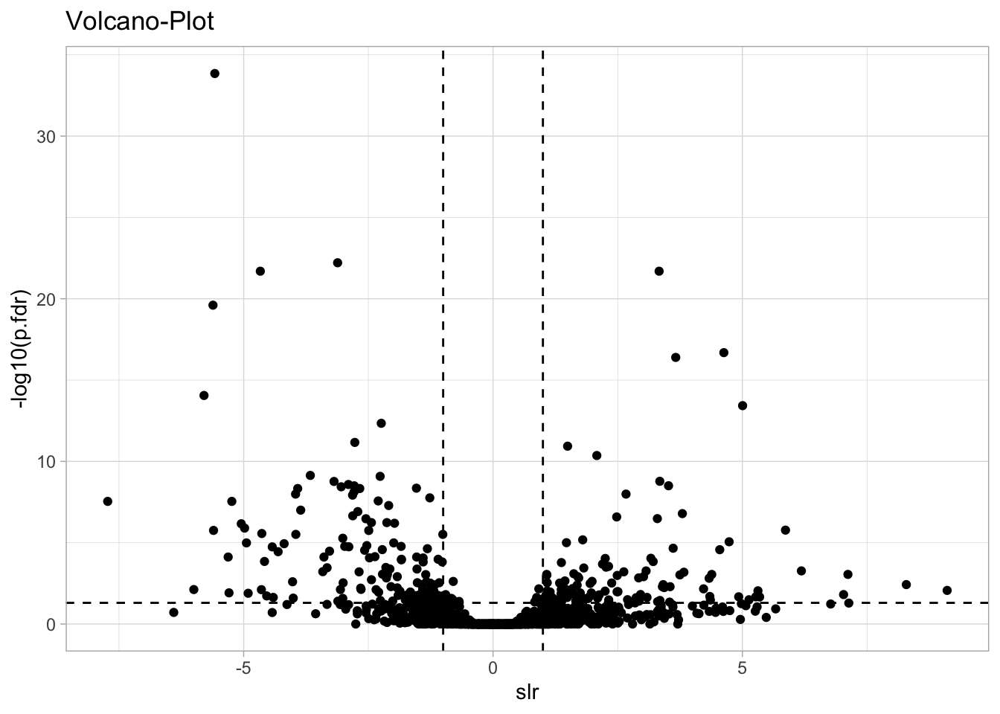
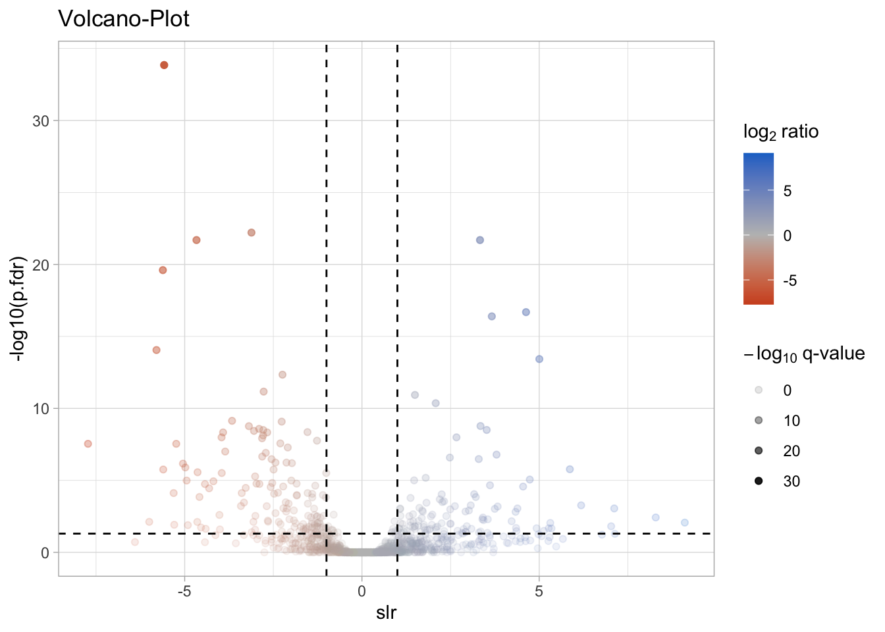
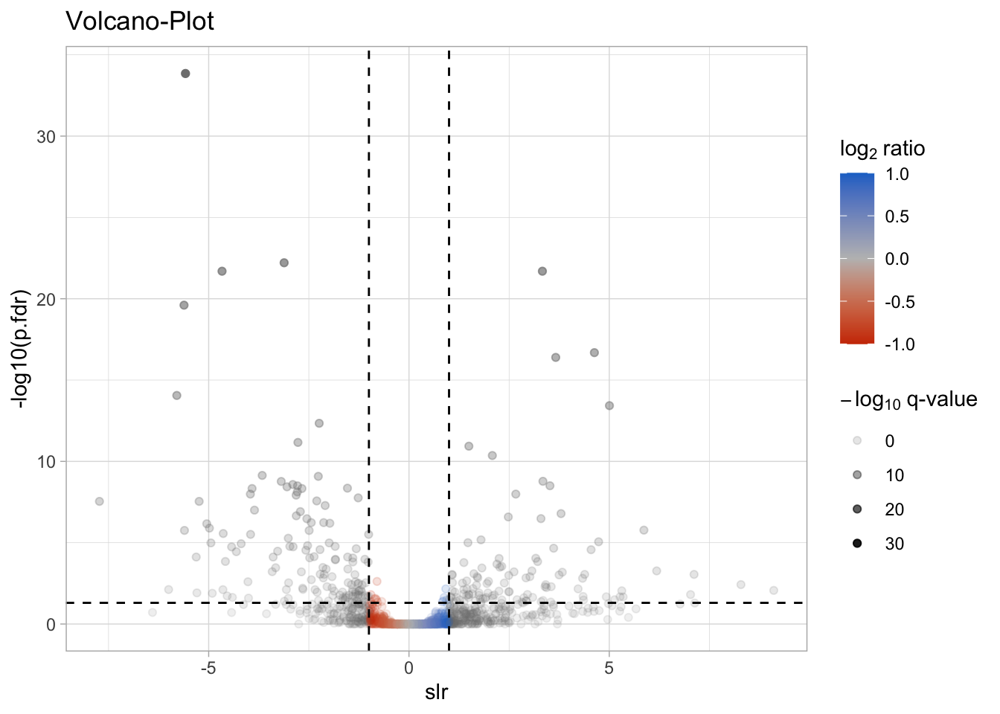
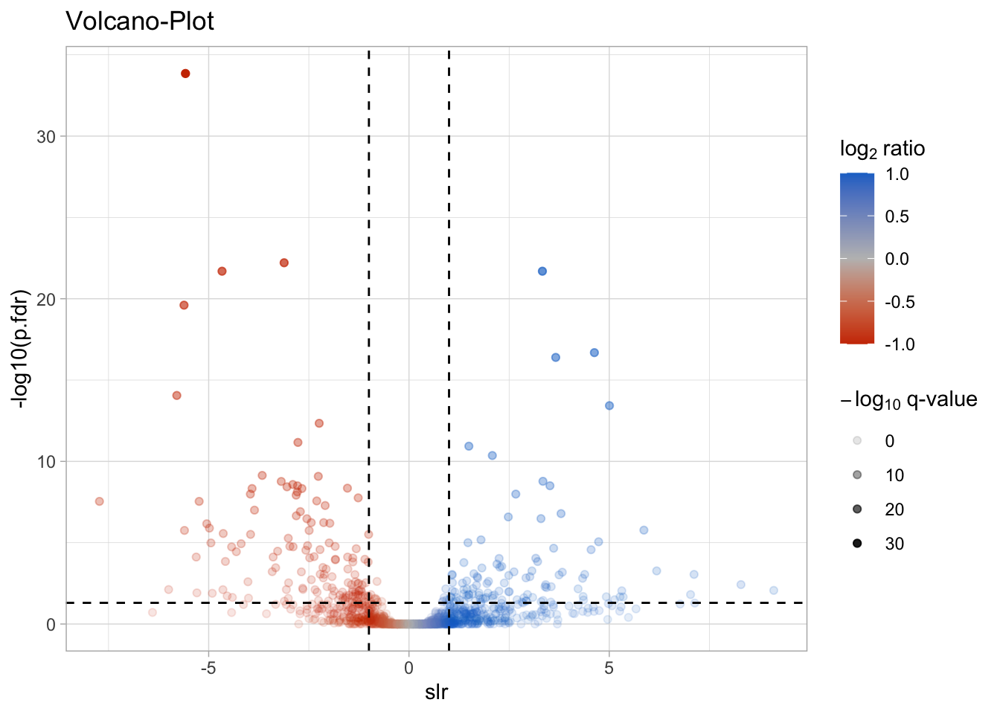

Function writing is very important in R since all packages are designed out of functions and you always call a function e.g. mean(), sum(), group_by() ….
So here I will show you an example of an often used calculation in the lab. How many weight (g) you need for a molar solution.
# this is the basic skeleton of a function
name_of_your_function <- function(variables){
"your calculations ...."
return(result)
}Now we will write a function for:
mass (g) = concentration (mol/L) x End-Volume (L) x Molecular Weight (g/mol)
Therefore variables are:
The output should be:
This would be the function in R:
molarity_mass_calculator_raw <- function(concentration,
end_volume,
molecular_weight,
return_number_only = F){
#perform the calculation with the variables
mass <- concentration*end_volume*molecular_weight
#returning mass value in gram
return(mass)
}In R, it is not necessary to include the return statement. R automatically returns whichever variable is on the last line of the body of the function. While in the learning phase, we will explicitly define the return statement.
In addition, to include a sentence as an output return instead of a number we include a paste() and also include a possibility to choose between sentence or number output of the function.
molarity_mass_calculator <- function(concentration,
end_volume,
molecular_weight,
return_number_only = F){
#perform the calculation with the variables
mass <- concentration*end_volume*molecular_weight
#here we use a if() statement for the return of the result
if(return_number_only==T){
#return the output as number
return(mass)
}else{
#return your output as sentence
return(paste("For a",concentration,
"M solution you need to weight in", mass,
"g and add",end_volume,"L of your solvent." ))
}
}Now lets test the function:
molarity_mass_calculator(concentration = 1,
end_volume = 0.5,
molecular_weight = 58.44)## [1] "For a 1 M solution you need to weight in 29.22 g and add 0.5 L of your solvent."if one variable is not specified in the function defaults are
being used; here return_number_only is not specified so the default is
used return_number_only=F
You can test other examples and also might want to save the function in an .R file. (e.g. “mol_mass_calculator.R”)
You can source this file in every project by using:
# if your R file is inside the project folder
source("mol_mass_calculator.R")
# if your R file is outside the project folder
# you have to specify the path
source("path/mol_mass_calculator.R")First you have to load the package.
library(tidyverse)First we will create a basic function calculating the coefficient of variation (CV), which is defined as SD/mean
# basic function for CV calculation
cv_function <- function(x){
cv_out <- sd(x,na.rm=T)/mean(x,na.rm=T)
return(cv_out)
}For our next function we will use the across() function which is very useful in a number of settings.
across() - Apply a function (or functions) across multiple columns
.cols: selected columns.fns: Functions to apply to each of the selected
columns. Can be a function() or a list of functions..names: A glue specification that describes how to name
the output columns. This can use {.col} to stand for the selected column
name, and {.fn} to stand for the name of the function being applied. The
default (NULL) is equivalent to “{.col}” for the single function case
and “{.col}_{.fn}” for the case where a list is used for .fns.The cv_vars() summarises the selected variable using
your above written cv_function() calculating the coefficient of
variation.
# function for CV calculation using dplyr
cv_vars <- function(df, vars){
summarise(df, #data frame
across(.cols = {{vars}},# using variables {{}}
.fns = cv_function, #use your function
.names = "CV__{.col}" #setup name prefix
)
)
}If you wanted to compute multiple column summaries with different functions and you wanted to glue the function name onto your outputted column names, you should pass a named list of functions into the .fns argument of across().
# complex summarise list of functions
summarise_vars <- function(df, vars){
summarise(df, #data frame
across(.cols = {{vars}},# using variables {{}}
.fns = list(mean = mean,
sd = sd,
cv = cv_function),
.names = "{.fn}__{.col}"
)
)
}example using your cv_vars() function >> output CV
over selected variables; grouping can be used
iris %>%
group_by(Species) %>%
cv_vars(vars = c("Sepal.Length","Sepal.Width") )example using your summarise_vars() function >>
output mean, SD, CV over selected variables; grouping can be used
iris %>%
group_by(Species) %>%
summarise_vars(vars = c("Sepal.Length","Sepal.Width") )When you use where(is.numeric) as varibales for your
summarise_vars() function the function is applied to all columns
containing numerics
iris %>%
group_by(Species) %>%
summarise_vars(vars = where(is.numeric) )If you use ggrepel package you might face the warning
message:
This was intentionally build since e.g. if you select a 1000 labels in a scatter plot massive overplottig and very long calculation times would be the result. To resolve that the creators of ggrepel included an algorithm that plot only labels which will not overlap per default.
to avoid that include in your global option:
options(ggrepel.max.overlaps = 100)This option means that e.g. 100 labels can be over-plotted.
If you use ggplot and want define a color scale you might face the problem that if limits were set colors are out of bounds.
# plot volcano plot
library(tidyverse)
# load statistics table
ROPECA_test_results <- read_delim("ROPECA_test_results_pairwise_comparisons__rho_project.txt", delim = "\t")
# filter for one comparison
ROPECA_test_results_filtered <- ROPECA_test_results %>% filter(group1=="HG_RPMI_exp" & group2 =="HG_RPMI_stat")Now we will plot the raw data:
# raw plot
ggplot(ROPECA_test_results_filtered,aes(x = slr,y = -log10(p.fdr)))+
geom_point()+
geom_hline(yintercept = -log10(0.05), linetype = "dashed")+
geom_vline(xintercept = log2(c(0.5,2)), linetype = "dashed")+
theme_light()+
labs(title = "Volcano-Plot")
If we would like to add color according to the fold change and alpha according to p-value the code will look like this:
# plot with color and alpha
ggplot(ROPECA_test_results_filtered,aes(x = slr,y = -log10(p.fdr), color = slr, alpha = -log10(p.fdr)))+
geom_point()+
geom_hline(yintercept = -log10(0.05), linetype = "dashed")+
geom_vline(xintercept = log2(c(0.5,2)), linetype = "dashed")+
theme_light()+
labs(title = "Volcano-Plot",
color = expression(log[2]~"ratio"),
alpha = expression(-log[10]~"q-value"))+
scale_color_gradient2(low = "orangered3",
mid = "grey",
high = "dodgerblue3",
midpoint = 0)
If we now would like to have put limits to the color scale we will face the problem with the color out of bounds. Out of bounds colors are presented in grey per default:
# plot with color, alpha and color limits >> out of bounds issue
ggplot(ROPECA_test_results_filtered,aes(x = slr,y = -log10(p.fdr), color = slr, alpha = -log10(p.fdr)))+
geom_point()+
geom_hline(yintercept = -log10(0.05), linetype = "dashed")+
geom_vline(xintercept = log2(c(0.5,2)), linetype = "dashed")+
theme_light()+
labs(title = "Volcano-Plot",
color = expression(log[2]~"ratio"),
alpha = expression(-log[10]~"q-value"))+
scale_color_gradient2(low = "orangered3",
mid = "grey",
high = "dodgerblue3",
midpoint = 0,
limits = log2(c(0.5,2)) # setting limits insight gradient color function
)
To overcome this issue we use the scales package:
# plot with color, alpha and color limits >> solution of out of bounds issue
library(scales)
ggplot(ROPECA_test_results_filtered,aes(x = slr,y = -log10(p.fdr), color = slr, alpha = -log10(p.fdr)))+
geom_point()+
geom_hline(yintercept = -log10(0.05), linetype = "dashed")+
geom_vline(xintercept = log2(c(0.5,2)), linetype = "dashed")+
theme_light()+
labs(title = "Volcano-Plot",
color = expression(log[2]~"ratio"),
alpha = expression(-log[10]~"q-value"))+
scale_color_gradient2(low = "orangered3",
mid = "grey",
high = "dodgerblue3",
midpoint = 0,
limits = log2(c(0.5,2)),#set limits insight color gradient function
oob = squish # oob parameter set out of bound colors to max. color value
)
Scales package >>Out of bounds handling
oob.
This set of functions modify data values outside a given range. The oob_*() functions are designed to be passed as the oob argument of ggplot2 continuous and binned scales, with oob_discard being an exception.
These functions affect out of bounds values in the following ways:
oob_censor() replaces out of bounds values with NAs. This is the default oob argument for continuous scales.
oob_censor_any() acts like oob_censor(), but also replaces infinite values with NAs.
oob_squish() replaces out of bounds values with the nearest limit. This is the default oob argument for binned scales.
oob_squish_any() acts like oob_squish(), but also replaces infinite values with the nearest limit.
oob_squish_infinite() only replaces infinite values by the nearest limit.
oob_keep() does not adjust out of bounds values. In position scales, behaves as zooming limits without data removal.
oob_discard() removes out of bounds values from the input. Not suitable for ggplot2 scales.